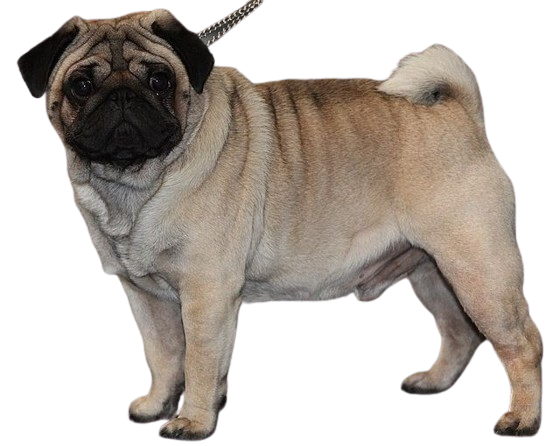
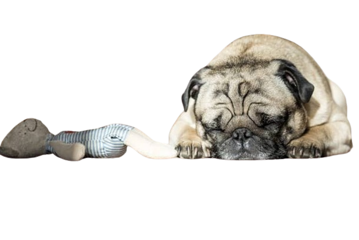

Página sobre Pet Pug
Ésta página vai falar sobre a vida dos Pug
Pug é uma raça de cão de companhia de pequeno porte, com focinho achatado e cauda enrolada. São cães braquicefálicos, ou seja, têm o focinho "achatado".
Cães com essa características tem o sistema respiratório superior comprimido e portanto não toleram muito exercício físico.

Cuidado especiais com Pug
-Ele é um cachorro braquicefálico
-É preciso ter uma atenção especial ao tipo de ração que o pug irá comer.
-Os olhinhos dele também costumam ser uma área de atenção.
-Ele necessita de banhos regulares com secagem cuidadosa e completa, principalmente nas áreas das dobrinhas.

Tamanho
A altura varia de
20 a 30 cm
Peso
O peso varia de
6 a 8 kg
Eles são incriveis pois para companhia são ótimos amigos
Um pouco Sobre eles Pug
Tudo sobre o seu:
Pug
Essa raça é uma das mais antigas que existe. Foram encontrados indícios de cachorros muito parecidos com o Pug datados de 1700 antes de Cristo! No entanto, não se tem certeza absoluta de sua origem. Existem teorias de que o Pug surgiu do cruzamento de diversas outras raças como o Pequinês ou ainda o Mastife Francês. O que se tem certeza é de que os Pugs surgiram em algum local da China e eram cachorros pertencentes à realeza. Esses cãezinhos foram levados para a Holanda e a partir de lá atingiram outros países da Europa onde receberam diferentes nomes. Na França ficaram conhecidos como "Carlin", na Espanha como "Dugollo", na Alemanha eram os "Mops" e na Itália eram chamados de "Caganlino". Os Pugs chegaram aos EUA após a Guerra Civil e foram reconhecidos como raça oficial pelo Kennel Club em 1885.
Clique Aqui para conhecer melhor
Especificações do Pug
-Pelagem :
Os pelos do Pug são bem curtinhos, finos e macios. As cores da raça são: prata, abricó, fulvo e preto. Ter o focinho e as orelhas pretas também faz parte das características da pelagem do Pug. Soltam bastante pelo durante o ano todo, por isso uma escovação diária ajuda a retirar os pelos mortos e evitar que caiam e se espalhem pela casa toda. Você pode usar uma luva específica para pets caso a tarefa não seja tão satisfatória com o uso de uma escova comum.
-Saúde : A anatomia do Pug não é muito favorável para a sua saúde, por isso ele precisa de bastante cuidado e um acompanhamento de perto. As ruguinhas, tão características desse cachorro, precisam de uma atenção especial - já que são propícias à proliferação de fungos e bactérias, por isso é preciso sempre limpá-las com um pano seco, lenço umedecido para cães ou com produtos específicos indicados por um médico veterinário. Outra questão muito importante da saúde dos Pugs está relacionada com a dificuldade deste animal de trocar calor com o meio. Os cachorros utilizam a respiração (aquela mais ofegante, sabe?) para trocar o calor e manter a temperatura corporal equilibrada. Como os Pugs possuem o focinho muito achatado, esta ação é mais difícil - o que faz com eles sofram demais com temperaturas altas, tendo grandes chances de desenvolver um quadro de hipertermia, que pode levar a morte. Por isso uma atenção mais do que redobrada é necessária, mantendo esses animais sempre em ambientes frescos e arejados. Eles também precisam de cuidados com os olhos (que são mais saltados), podem apresentar alergias e precisam de uma alimentação bem balanceada para controlar o peso e evitar a obesidade, que é uma das tendências da raça.
-Temperamento : Cachorro de companhia é o que melhor define o Pug. Eles são extremamente apegados aos seus tutores e muito sociáveis com todos. Apesar de às vezes serem preguiçosos e não gostarem tanto de atividades físicas, são bastante brincalhões e alegres. Amam ficar no colo! Assim como a maioria dos cachorros, precisa ser socializado desde filhote para que se dê bem com outros animais e crianças, por exemplo, mas os pugs, em geral, não costumam apresentar problemas comportamentais neste sentido. Por essas características, é um cachorrinho que se adapta bem em apartamentos e espaços menores, desde que estejam sempre frescos! Costumam receber a todos com muita receptividade e entusiasmo, mesmo aqueles que não conhecem bem.
-inteligência : O Pug é um cachorro inteligente, mas um tanto quanto teimoso. Sua colocação no livro A Inteligência dos Cães de Stanley Coren é a de número 57, o que mostra que o Pug não precisa de tantas repetições para aprender um comando, mas precisa que eles sejam sempre praticados. Como é muito leal à família, vale sempre reforçar os comandos para que o bichinho não acabe dominando a casa. Gostam de agradar e fazem de tudo para verem seus humanos felizes.
-Tempo de Vida : A expectativa de vida de um cachorro da raça Pug é de 12 a 16 anos.
-Cuidados : O Pug precisa de acompanhamento médico veterinário com mais frequência do que outras raças e necessita de uma escovação frequente de sua pelagem, algo não tão comum para cães com pelinhos como os deles. Exercícios físicos devem ser moderados, pequenas caminhadas em horários mais fresquinhos do dia são bastante indicadas. No entanto, são importantes para a saúde do animal, tanto pela questão do peso, quanto por motivos de socialização e estímulos - já que costumam ficar a maior parte do tempo dentro de casa.
Características do seu Pug
Energia
Obediência
Inteligência
Territorialista
Apego ao dono
Tendência a latir
Amizade com crianças
Amizade com outros animais